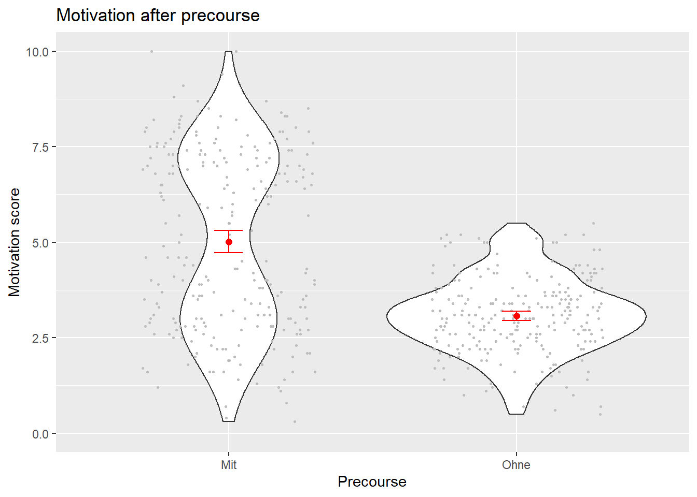

Heute, in der letzten Sitzung dieses Vorkurses, werden wir erste Schritte mit Inferenzstatistik in R machen. Ziel wird es sein, ein sehr einfaches lineares Modell aufzustellen, dessen Annahmen zu prüfen und das Ergebnis zu interpretieren.
Dazu laden wir zunächst Pakete, setzen dann das working directory, laden die Daten und rekodieren Faktoren.
Vorbereitung
library(ggplot2)library(psych)
Attaching package: 'psych'
The following objects are masked from 'package:ggplot2':
%+%, alpha
library(car)
Warning: package 'car' was built under R version 4.0.5
Loading required package: carData
Attaching package: 'car'
The following object is masked from 'package:psych':
logit
library(rcompanion)
Warning: package 'rcompanion' was built under R version 4.0.5
Attaching package: 'rcompanion'
The following object is masked from 'package:psych':
phi
library(lmtest)
Warning: package 'lmtest' was built under R version 4.0.5
Loading required package: zoo
Warning: package 'zoo' was built under R version 4.0.5
Attaching package: 'zoo'
The following objects are masked from 'package:base':
as.Date, as.Date.numeric
Zu jeder Auswertung gehört es dazu, sich die Daten vor der Analyse einmal anzusehen. An Grafiken lässt sich ableiten, was mögliche Modelle/Analysemethoden angemessen sind und welche Einstellungen vorgenommen werden müssen.
Deskriptive Grafik
ggplot(dat, aes(precourse, mot_post)) +geom_violin() +geom_jitter(width =0.3, height =0, col ="grey", size =0.5) +stat_summary(fun = mean, geom ="point", size =2, col ="red") +stat_summary(geom="errorbar", fun.data=mean_cl_normal, width=.1, col ="red")+ylim(0,10) +ylab("Motivation score") +xlab("Precourse") +ggtitle("Motivation after precourse")

Ist ein allgemeines lineares Modell eurer Meinung nach angemessen? Woran seht ihr das? Für den Rest der Sitzung wollen wir eure Vermutungen überprüfen, indem wir ein Modell aufstellen, seine Annahmen überprüfen und seine Ergebnisse interpretieren.
Einfaches ALM
model =lm(mot_post ~ precourse, data=dat)
Der erste Teil im lm()-Befehl ist die Formel. Die Tilde (~) steht dabei für “in Abhängigkeit von”.
So einfach ist es, in R ein lineares Modell auszurechnen. Die Regression wurde berechnet und die Effekte wurden mit t-Statistik schon ausgerechnet. Bevor wir uns aber darum kümmern, wollen wir überprüfen, ob die Annahmen des ALM erfüllt sind.
Interpretation
Ungeachtet der nicht erfüllten Annahme zu den Residuen des Modells sehen wir uns zur Interpretation erstmal die Ergebnisse an.
Dazu gibt es den summary()-Befehl, der für so ziemlich jedes statistische Modell funktioniert und uns die Ergebnisse ausgibt.
summary(model)
Call:
lm(formula = mot_post ~ precourse, data = dat)
Residuals:
Min 1Q Median 3Q Max
-4.7120 -1.1704 -0.0704 1.2880 4.9880
Coefficients:
Estimate Std. Error t value Pr(>|t|)
(Intercept) 5.0120 0.1134 44.22 <2e-16 ***
precourseOhne -1.9416 0.1603 -12.11 <2e-16 ***
---
Signif. codes: 0 '***' 0.001 '**' 0.01 '*' 0.05 '.' 0.1 ' ' 1
Residual standard error: 1.792 on 498 degrees of freedom
Multiple R-squared: 0.2275, Adjusted R-squared: 0.226
F-statistic: 146.7 on 1 and 498 DF, p-value: < 2.2e-16
Zunächst einmal ist die F-Statistik in der letzten Zeile interessant. Diese sagt uns, dass unser Modell die Daten besser erklärt, als einfach nur einen Mittelwert über alle Bedingungen zu bilden (das nennt man das Nullmodell).
Außerdem sehen wir an dem Estimate für precourseYes, dass Menschen, die den Vorkurs besucht haben, danach durchschnittlich um 1,9 Punkte stärker motiviert sind.
Neues Modell
Jetzt haben wir schon eine Analyse gemacht und herausgefunden, dass unsere Daten nicht so super zum ALM passen, es aber einen positiven Einfluss vom Vorkurs auf die Motivation zu geben scheint.
Im nächsten Schritt wollen wir prüfen, ob Leute mit hoher Motivation vor dem Vorkurs auch eher eine hohe Motivation nach dem Vorkurs haben. Dazu schließen wir mot_pre mit ins Modell ein.
Stellt nun das Modell auf und nennt es model2. Mehrere Prädiktoren werden dabei einfach mit einem + dazwischen hintereinander geschrieben.
# Modellaufstellung
Um zu überprüfen, ob wir diesen Prädiktor überhaupt ins Modell einschließen sollten, können wir jetzt auch eine Varianzanalyse rechnen. Nehmt das # vorne weg, damit der Code ausgeführt wird.
#anova(model2)
Schaut euch nun die Ergebnisse des neuen Modells an und versucht, es zu interpretieren.
# Ergebnisse und Interpretation
Das wars für diesen Vorkurs. Ich hoffe, ihr habt etwas gelernt und seid vielleicht nicht komplett von R abgeschreckt.